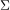
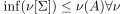
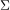

Äquivalenz vom Infimum der epsilon-Folgerbarkeit und absoluter Folgerbarkeit
1. Satz
Ist  eine Menge von Formeln, so ist
 1
1
äquivalent zu

2
vorstellung: -> kombinationen von designierten wahrheitswerten
Ist  eine Menge von Formeln, so ist
1
äquivalent zu
vorstellung: -> kombinationen von designierten wahrheitswerten